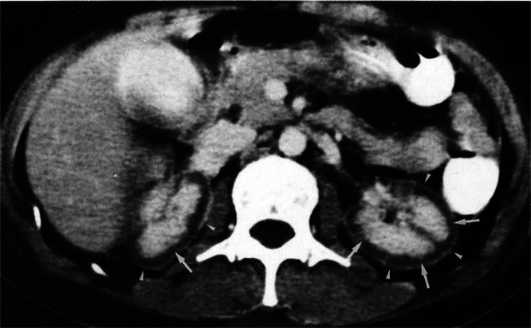
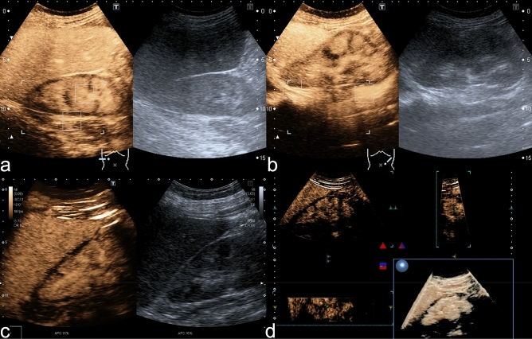
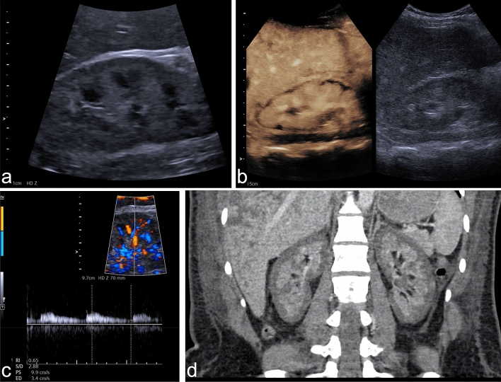
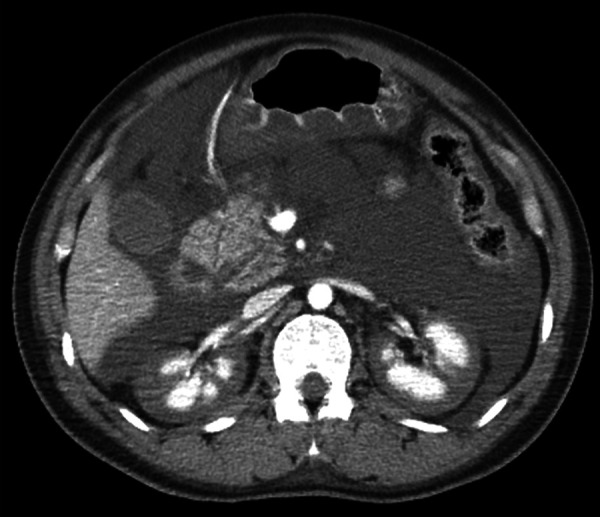

1957 — Hoại tử vỏ thận sau băng huyết sau sinh: vỏ không ngấm thuốc, tuỷ còn ngấm / Postpartum renal cortical necrosis
Tags: pattern:vo-than-khong-ngam pattern:hoai-tu pattern:suy-than-cap pattern:giam-tuoi-mau pattern:vi-mach-huyet-khoi vung:than vung:tu-cung-phan-phu protocol:CT-bung-can-quang protocol:CEUS protocol:MRI-bung score:KDIGO
Mức chắc chắn (certainty): tổng hợp y văn (literature synthesis) — ghép loạt 21 ca RCN thai kỳ (Kidney Int Rep 2019, PMC6409395: 17,5% AKI thai kỳ, 95,2% aHUS, kết cục 6 tháng), loạt 17 ca MRI chức năng không cản từ (Kidney Med 2023, PMC10131107: phenotype lan toả/khu trú và tiên lượng), loạt 12 ca sinh thiết (Kidney Med 2024, PMC11417324: đặc điểm mô bệnh và kết cục), nghiên cứu CEUS 12 ca (Sci Rep 2021, PMC7820240: reverse rim sign 12/12, RI, phân biệt huyết khối tĩnh mạch thận), ca lâm sàng có ảnh CT (Radiology Case Reports 2025, PMC12138507; Clin Nephrol Case Stud 2025, PMC12723601) và ca RCN MỘT BÊN (Radiology Case Reports 2024, PMC10992279). Số nào nguồn không nêu ghi "chưa rõ".
Câu chốt: sau băng huyết, thiểu niệu/vô niệu kéo dài + creatinin tăng nhanh mà siêu âm chỉ thấy thận bình thường thì phải nghĩ hoại tử vỏ thận — chẩn đoán bằng vỏ thận không ngấm thuốc trong khi tuỷ vẫn ngấm (CT cản quang hoặc CEUS tại giường). Đây là tổn thương không hồi phục hoàn toàn: 66,7% còn lọc máu ở 6 tháng trong một loạt, và 41% phụ thuộc lọc máu trong một loạt MRI — khác hẳn hoại tử ống thận cấp (ATN) vốn hồi phục. Gọi nhầm ATN → tiên lượng sai, không chuẩn bị lọc máu mạn/ghép.
1. Tổng quan bệnh học – cơ chế hình ảnh
1.1 Vì sao VỎ chết mà TUỶ sống (TẠI SAO — cốt lõi của bài)
- Giải phẫu mạch máu: vỏ thận nhận ~90–95% lưu lượng máu thận qua các động mạch gian tiểu thuỳ (interlobular arteries) rồi tiểu động mạch vào (afferent) — đây là đoạn cuối của cây mạch, không có tuần hoàn bàng hệ trong nhu mô. Tuỷ thận nhận lưu lượng thấp hơn nhiều nhưng được cấp bởi vasa recta chạy dọc và có khả năng chịu thiếu oxy cao hơn (nồng độ oxy thấp sinh lý, chuyển hoá kỵ khí).
- Khi có sốc/giảm tưới máu toàn thể + DIC (điển hình sau băng huyết): co mạch tiểu động mạch vào + huyết khối vi mạch + tổn thương nội mạc → vỏ thận — nơi có nhu cầu oxy cao nhất và là "điểm tận" của mạch — chịu thiếu máu nặng nhất, trong khi tuỷ vẫn được tưới một phần. Kết quả: hoại tử đông vón vỏ thận (coagulative necrosis) lan toả, tuỷ còn sống — đây chính là hình "vỏ tối, tuỷ sáng" trên CT.
- Vì sao tổn thương KHÔNG hồi phục hoàn toàn: vỏ là nơi chứa toàn bộ cầu thận; cầu thận hoại tử không tái sinh. Phần vỏ còn sống chỉ là dải mỏng dưới bao nuôi bởi nhánh động mạch bao (capsular arteries) — nên có thể thấy viền mỏng ngấm thuốc sát bao ("cortical rim sign"), và chức năng chỉ hồi phục một phần nhờ các nephron còn sót.
- Vì sao thường gặp ở sản khoa: thai kỳ có tăng đông, giảm bù dịch nội mạch khi mất máu ồ ạt, và các nguyên nhân DIC "sản khoa" (nhau bong non, nhau cài răng lược, thuyên tắc ối, nhiễm khuẩn ối, sảy thai nhiễm khuẩn) — đó là lý do RCN là biến chứng thận nặng nhất của băng huyết sau sinh.
1.2 Vì sao hình ảnh trông như vậy (vật lý từng phương thức)
- CT cản quang (thì vỏ/tuỷ 80–100 giây): iod có Z = 53, làm tăng độ suy giảm tia X tỉ lệ với nồng độ iod trong mô (khoảng 25–30 HU cho mỗi 1 mg iod/mL ở 120 kVp). Không có tưới máu → không có iod → không tăng đậm độ → vỏ không ngấm thuốc, còn tuỷ (còn tưới máu) ngấm thuốc → chênh đậm độ đảo ngược so với bình thường (bình thường vỏ sáng hơn tuỷ ở thì vỏ). Dấu hiệu đặc hiệu: không bài tiết thuốc cản quang vào đài bể thận (PMC6409395).
- CEUS (siêu âm cản quang): vi bọt khí nằm trong lòng mạch (không vào kẽ) → bản đồ tưới máu thật, không độc thận, làm được tại giường. Vỏ hoại tử không tăng âm trong khi tháp tuỷ tăng âm → "reverse rim sign" (viền dưới bao không ngấm). Nghiên cứu 12 ca: reverse rim sign 12/12 (100%), trong khi viền giảm âm trên B-mode chỉ 4/12 (33,3%) — nghĩa là siêu âm thường bỏ sót 2/3 số ca (PMC7820240).
- Siêu âm Doppler: chỉ số sức cản (RI) < 1** ở cả 10 ca đo được (trung vị **0,78**; khoảng **0,60–0,91**) — khác **huyết khối tĩnh mạch thận** có **RI > 1 hoặc không đo được vì giảm tưới máu (p = 0,001) (PMC7820240).
- MRI: tổn thương T2 tối ở vỏ trong và cột Bertin (phù vỏ ngoài giai đoạn sớm, sau đó mỏng vỏ + giảm tín hiệu T2 rõ dần) — vì hoại tử đông vón làm mất nước tự do và máu thoái hoá (deoxyhemoglobin/hemosiderin) rút ngắn T2; mô hoại tử không ngấm thuốc trên T1 sau tiêm. MRI không cần iod nên dùng được khi suy thận nặng (PMC10131107).
1.3 Ngưỡng định lượng nằm lòng
- Tần suất: RCN chiếm 17,5% các ca tổn thương thận cấp liên quan thai kỳ trong một loạt 21 ca (tất cả đều sau sinh) (PMC6409395). Con số này không đại diện toàn cầu — phụ thuộc tuyến chuyển đến; dùng để nhớ RCN không phải "ca hiếm gặp trong đề thi" mà là biến chứng gặp thật.
- Nguyên nhân nền trong thai kỳ: 88% có aHUS (tán huyết–tăng ure máu không điển hình), 65% có băng huyết sau sinh, 41% có tiền sản giật/HELLP, 24% có DIC (loạt 17 ca MRI) (PMC10131107). Trong loạt 21 ca: 95,2% có thiếu máu tán huyết vi mạch; 9/15 ca xét nghiệm có bất thường bổ thể (PMC6409395).
- Kết cục 6 tháng (loạt 21 ca): chỉ 9,5% hồi phục một phần, 23,8% tử vong, 66,7% còn lọc máu (PMC6409395).
- Kết cục dài hạn (loạt 17 ca MRI, theo dõi trung vị 60 tháng): 4 ca eGFR ≥ 60, 6 ca eGFR 15–60, 7 ca phụ thuộc lọc máu (41%); 100% ca phenotype lan toả (diffuse) đều phụ thuộc lọc máu (PMC10131107).
- Kết cục theo mô bệnh (loạt 12 ca sinh thiết): 4/12 (33%) có eGFR < 30 sau 6 tháng; nhóm kết cục xấu có nhiều hoại tử đông vón cầu thận, huyết khối mao mạch, hoại tử vỏ lan rộng và tổn thương tiểu động mạch hơn (PMC11417324).
- Ngưỡng hình ảnh: viền không ngấm rộng tối đa trung vị 4,5 mm (IQR 3–5,8) trên CEUS; thuốc vào vỏ chậm > 20 giây gặp ở 6/12 (50%) — nên phải quan sát ít nhất 2 phút trước khi kết luận (PMC7820240).
- AKI: tất cả bệnh nhân trong các loạt đều AKI giai đoạn 3 (KDIGO) — creatinin ≥ 3 lần nền hoặc ≥ 353,6 µmol/L, hoặc vô niệu ≥ 12 giờ.
2. Mẫu hình + chẩn đoán phân biệt theo vị trí (Gamut)
Mẫu hình mẹ: thận hai bên, vỏ không ngấm thuốc đối xứng, tuỷ ngấm thuốc, không bài tiết thuốc — gamut theo phân bố tổn thương:
- Lan toả, đối xứng, toàn bộ vỏ (hai bên): hoại tử vỏ thận (sản khoa, nhiễm khuẩn, DIC, sốc), nhồi máu thận toàn thể hai bên (huyết khối động mạch thận hai bên, bóc tách động mạch chủ lan tới), "thận sốc" (shock kidney) — giảm tưới máu toàn thể có thể hồi phục.
- Khu trú / một bên: nhồi máu thận một bên (thuyên tắc), RCN một bên (hiếm — chỉ vài ca trong y văn, thường kèm tắc nghẽn đối bên hoặc DIC) (PMC10992279), viêm thận bể thận cấp (ổ giảm ngấm hình nêm + ứ mủ).
- Giảm ngấm không đều, dạng mảng: ATN (vỏ vẫn ngấm, giảm ngấm vỏ không đều), tổn thương do thuốc cản quang, bệnh thận do tăng huyết áp ác tính.
- Tuỷ tổn thương, vỏ còn: hoại tử nhú thận (papillary necrosis) — ngược lại RCN: nhú không ngấm, vỏ còn.
- Thận to + giảm ngấm + huyết khối trong tĩnh mạch: huyết khối tĩnh mạch thận — RI > 1, thấy huyết khối trong lòng tĩnh mạch thận.
Gợi nhớ 4 câu hỏi: (1) vỏ có ngấm không? (2) tuỷ có ngấm không? (3) có bài tiết thuốc không? (4) một bên hay hai bên?
3. Bảng so sánh phân biệt (ma trận đối chiếu)
| Thực thể (entity) | Hình ảnh điển hình (CT thì vỏ–tuỷ / CEUS / MRI) | Chốt vào (rule-in) | Chốt loại (rule-out) | Gợi ý xác nhận |
|---|---|---|---|---|
| Hoại tử vỏ thận (RCN) | Vỏ không ngấm toàn bộ, tuỷ ngấm, không bài tiết thuốc; CEUS: reverse rim sign, viền không ngấm ~4,5 mm; MRI T2: dải tối vỏ trong + cột Bertin | Vỏ không ngấm + tuỷ ngấm + bối cảnh băng huyết/DIC | Vỏ ngấm đều (dù giảm) → không phải RCN toàn bộ | CEUS tại giường hoặc CT cản quang; sinh thiết nếu còn nghi ngờ |
| Hoại tử ống thận cấp (ATN) | Vỏ vẫn ngấm thuốc, có thể giảm không đều; thận to nhẹ; CEUS: tưới máu vỏ còn | Vỏ còn tưới máu + thiểu niệu hồi phục sau 1–3 tuần | Vỏ không ngấm hoàn toàn → nghĩ RCN | Theo dõi creatinin/nước tiểu; sinh thiết khi không hồi phục |
| Nhồi máu thận toàn thể | Không ngấm cả vỏ và tuỷ ở vùng nhồi máu, hình nêm hoặc toàn thận; có thể thấy huyết khối động mạch | Khuyết ngấm hình nêm + huyết khối ĐM thận trên CTA | Còn ngấm tuỷ → không phải nhồi máu toàn thể | CTA thì động mạch; siêu âm Doppler (mất phổ) |
| Huyết khối tĩnh mạch thận | Thận to, giảm ngấm lan toả, huyết khối trong tĩnh mạch thận; Doppler RI > 1 hoặc không đo được | Huyết khối trong lòng tĩnh mạch thận + RI > 1 | RI < 1 + tuỷ ngấm → không phải RVT | CT tĩnh mạch thì muộn; Doppler; MRI |
| "Thận sốc" (shock kidney) | Giảm ngấm vỏ không đều, có mảng còn ngấm; hồi phục sau hồi sức | Giảm ngấm mảng + huyết động cải thiện → tưới máu trở lại | Không ngấm toàn bộ + không hồi phục → nghĩ RCN | Chụp lại sau 24–48 giờ hồi sức |
| Hoại tử nhú thận | Nhú không ngấm, vỏ còn ngấm; có thể thấy mảnh nhú trong đài bể thận | Khuyết nhú + vỏ còn tưới máu | Vỏ không ngấm → không phải hoại tử nhú đơn thuần | CT thì bài tiết; soi bàng quang thấy mảnh nhú |

CT cản quang ngày 2 ở bệnh nhân hoại tử vỏ thận hai bên sau băng huyết sau sinh: vỏ không ngấm thuốc, tuỷ còn ngấm (mũi tên) — "vỏ tối, tuỷ sáng". Nguồn: Radiology Case Reports 2025 (PMC12138507), CC BY-NC-ND 4.0 — nguyên bản, không chỉnh sửa.4. Protocol + phân độ + quyết định
4.1 Trình tự chẩn đoán (bắt đầu bằng thứ không cần iod)
- Bước 1 — siêu âm thận + Doppler tại giường: loại ứ nước (tắc nghẽn), đo kích thước thận, RI. Lưu ý: B-mode thường bình thường trong RCN (chỉ 33,3% thấy viền giảm âm) — siêu âm bình thường không loại trừ.
- Bước 2 — CEUS tại giường (ưu tiên khi có): không độc thận, làm được ở bệnh nhân đang lọc máu; tìm reverse rim sign, đo bề rộng viền không ngấm, quan sát ≥ 2 phút (thuốc vào vỏ chậm > 20 giây ở 50% ca).
- Bước 3 — CT bụng–chậu cản quang (thì vỏ–tuỷ 80–100 giây, có thì bài tiết 5–10 phút): xác nhận vỏ không ngấm + tuỷ ngấm + không bài tiết; đồng thời tìm nguồn chảy máu còn hoạt động (thoát mạch ≥ 100 HU) và máu tụ sau phúc mạc — một lần chụp trả lời hai câu hỏi.
- Bước 4 — MRI (khi không dùng được iod hoặc cần tiên lượng): T1 sau tiêm + T2 + DWI; phenotype lan toả (dải tối vỏ trong + cột Bertin, vỏ mỏng dần) tiên lượng phụ thuộc lọc máu.
- Bước 5 — sinh thiết thận khi chẩn đoán còn mơ hồ hoặc để phân biệt aHUS/TMA (mô bệnh: hoại tử đông vón vỏ ngoài, huyết khối mao mạch, cầu thận vỏ sâu còn sống) (PMC11417324, PMC12723601).
4.2 Phân độ và quyết định điều trị
- Phân độ AKI theo KDIGO (dùng chung, không có phân độ riêng cho RCN): giai đoạn 3 khi creatinin ≥ 3 lần nền hoặc ≥ 353,6 µmol/L hoặc nước tiểu < 0,3 mL/kg/giờ trong 24 giờ hoặc vô niệu ≥ 12 giờ.
- Chỉ định lọc máu: quá tải dịch, toan chuyển hoá, tăng kali không đáp ứng, urê cao có triệu chứng — không chờ "xem có hồi phục không".
- Lựa chọn lọc máu: ca PMC12723601 chuyển sang thận nhân tạo phúc mạc (PD) để chăm con tại nhà, ngừng lọc sau 6 tháng, 4 năm sau creatinin 2,67 mg/dL — bằng chứng rằng RCN không đồng nghĩa lọc máu suốt đời; nhưng phải nói rõ đa số vẫn phụ thuộc lọc máu (66,7% và 41% ở hai loạt trên).
- Điều trị nguyên nhân nền: kiểm soát chảy máu (bài 1932, 1927), ức chế bổ thể ở aHUS khi xác định (thảo luận với huyết học/thận), tránh thuốc độc thận, tối ưu huyết áp.
- Theo dõi: creatinin + nước tiểu hằng ngày giai đoạn cấp; eGFR + protein niệu ở 3, 6, 12 tháng; siêu âm/CEUS lặp lại để đánh giá thể tích vỏ còn sống; tầm soát bệnh thận mạn và tăng huyết áp sau đó.
flowchart TD
A[Thiểu niệu hoặc vô niệu sau băng huyết, creatinin tăng nhanh] --> B[Siêu âm thận và Doppler tại giường]
B --> C{Có ứ nước hoặc tắc nghẽn?}
C -->|Có| D[Giải áp niệu quản rồi đánh giá lại]
C -->|Không| E[CEUS tại giường hoặc CT cản quang thì vỏ tuỷ]
E --> F{Vỏ không ngấm và tuỷ ngấm?}
F -->|Không| G[Nghĩ ATN, thận sốc, nhồi máu, RVT: chụp lại sau hồi sức]
F -->|Có| H[Hoại tử vỏ thận: xác định bề rộng viền không ngấm]
H --> I[Lọc máu theo chỉ định KDIGO, không chờ hồi phục]
I --> J[Điều trị nguyên nhân: cầm máu, aHUS, tránh thuốc độc thận]
J --> K[Theo dõi eGFR 3 và 6 và 12 tháng, tầm soát bệnh thận mạn]
5. Biến thể bình thường và cạm bẫy
- Hai dấu "rim" ngược nhau — đừng lẫn:
- "Cortical rim sign" = viền MỎNG NGẤM thuốc sát bao, nuôi bởi nhánh động mạch bao — nghĩa là còn một ít vỏ sống, gặp trong RCN và nhồi máu thận; không phải dấu hiệu của vỏ lành toàn bộ.
- "Reverse rim sign" trên CEUS = viền dưới bao KHÔNG ngấm (vỏ hoại tử) + tháp tuỷ ngấm — dấu hiệu đặc trưng của RCN (PMC7820240).
- Siêu âm B-mode bình thường: chỉ 1/3 ca có viền giảm âm → không được trấn an bằng "siêu âm bình thường" ở bệnh nhân vô niệu sau băng huyết.
- "Thận sốc" giả RCN: giảm tưới máu toàn thể do tụt huyết áp gây giảm ngấm vỏ lan toả nhưng hồi phục khi huyết động ổn — chụp lại sau 24–48 giờ trước khi kết luận vĩnh viễn.
- RCN một bên: hiếm, nhưng có thật — ca 51 tuổi có sỏi 4 mm tắc nghẽn bên phải + RCN bên trái do nhiễm khuẩn huyết/DIC; đừng mặc định "luôn hai bên" rồi bỏ sót tổn thương một bên (PMC10992279).
- Ảnh giả do thì chụp: chụp quá sớm (< 60 giây) thấy vỏ–tuỷ chưa tách rõ; chụp quá muộn khi thuốc đã vào đài bể thận làm mất dấu "không bài tiết". Ghi rõ thì chụp khi đọc.
- Bệnh nhân đang lọc máu: creatinin không phản ánh chức năng thận — dùng nước tiểu 24 giờ và hình ảnh để đánh giá.
- Sai lầm hệ thống: quy toàn bộ thiểu niệu cho "hoại tử ống thận do sốc" — ATN hồi phục trong 1–3 tuần, RCN thì không; sự khác biệt này là lý do phải chụp.
6. Tự lượng giá — Blind Quiz
Ca 1 — Sản phụ 38 tuổi, sinh thường 37 tuần, tiền sản giật – HELLP – nhau bong non, băng huyết sau sinh, vô niệu ngày thứ 2. Nhìn CT trước, mô tả trước.
- Gợi ý lâm sàng: creatinin tăng nhanh, nước tiểu gần như không có, đang lọc máu.
- Câu hỏi: Mô tả đậm độ vỏ và tuỷ hai thận? Có thấy thuốc trong đài bể thận không? Chẩn đoán và 3 phân biệt?
Bấm để hiện đáp án (findings + chẩn đoán)
- Findings: vỏ thận hai bên không ngấm thuốc (mũi tên), tuỷ còn ngấm thuốc; không thấy thuốc cản quang trong đài bể thận.
- Chẩn đoán: hoại tử vỏ thận hai bên sau băng huyết — vỏ là "điểm tận" của tuần hoàn thận nên chịu thiếu máu nặng nhất, tuỷ còn tưới máu.
- Phân biệt: ATN (vỏ vẫn ngấm), nhồi máu thận toàn thể (cả vỏ và tuỷ không ngấm), huyết khối tĩnh mạch thận (thận to, huyết khối trong tĩnh mạch, RI > 1).
- Nguồn ảnh: Radiology Case Reports 2025 (PMC12138507), CC BY-NC-ND 4.0.
Ca 2 — Cùng bệnh cảnh, siêu âm cản quang (CEUS) tại giường:

- Câu hỏi: Dấu hiệu trong (a) và (b) gọi là gì? Vì sao CEUS thấy rõ hơn B-mode? Phải quan sát bao lâu?
Bấm để hiện đáp án
- Findings: viền dưới bao không ngấm thuốc liên tục ("reverse rim sign") trong khi tháp tuỷ ngấm; (c) viền không ngấm rộng không đều; (d) dựng hình 3D.
- Vì sao CEUS rõ hơn: vi bọt khí chỉ nằm trong lòng mạch → phản ánh tưới máu thật; B-mode chỉ thấy thay đổi cấu trúc (chỉ 4/12 ca có viền giảm âm).
- Thời gian quan sát: ≥ 2 phút — 50% ca có thuốc vào vỏ chậm > 20 giây; kết luận sớm dễ bỏ sót.
- Đối chiếu 4 phương thức trên cùng bệnh nhân: B-mode (a) gần như bình thường; CEUS (b) lộ viền không ngấm; Doppler (c) cho **RI < 1** (còn tưới máu, khác RVT có RI > 1); CT dựng hình vành (d) xác nhận vỏ không ngấm, tuỷ ngấm:

- Nguồn ảnh: Sci Rep 2021 (PMC7820240), CC BY 4.0.
Ca 3 — Sản phụ 32 tuổi, băng huyết sau sinh không kiểm soát, được chuyển đến. CT bụng cản quang:

- Câu hỏi: Ngoài tổn thương thận, CT còn phải trả lời câu hỏi nào? Tiên lượng lọc máu của bệnh nhân này ra sao?
Bấm để hiện đáp án
- Findings: mất tưới máu vỏ hai bên, tuỷ còn ngấm (reverse rim sign); đồng thời CT phát hiện chảy máu tử cung còn hoạt động → cần can thiệp nội mạch cầm máu.
- Bài học: một lần CT cản quang trả lời hai câu: (1) nguồn chảy còn không; (2) vỏ thận còn sống không.
- Tiên lượng: bệnh nhân vô niệu, cần CHDF rồi HD, sinh thiết ngày 23 xác nhận hoại tử đông vón vỏ ngoài, cầu thận vỏ sâu còn sống; chuyển PD, ngừng lọc sau 6 tháng, 4 năm sau creatinin 2,67 mg/dL — hồi phục một phần nhờ nephron còn sót, không phải quy luật cho mọi ca.
- Nguồn ảnh: Clin Nephrol Case Stud 2025 (PMC12723601), CC BY 4.0.
Bài liên quan chéo
- 500 – Tổng quan Vú & Sản phụ khoa
- 1932 – Truyền máu khối lượng lớn & rối loạn đông máu trong PPH (nguyên nhân nền, ngưỡng fibrinogen)
- 1956 – Thuyên tắc ối (DIC sản khoa — nguyên nhân của cùng tổn thương thận)
- 1728 – Chảy máu sau vỡ tử cung (CT cản quang tìm thoát mạch)
- 1921 – Nhiễm khuẩn niệu & viêm thận–bể thận cấp ở thai phụ (phân biệt ứ nước – nhiễm khuẩn)
- 190 – Sỏi đường niệu trên & thận ghép (tắc nghẽn — lý do luôn loại trừ trước)
Ảnh
1957_hoai-tu-vo-than_CT_RadCaseRep-PMC12138507.jpg— CT, PMC12138507, CC BY-NC-ND 4.0 (nguyên bản, không chỉnh sửa).1957_hoai-tu-vo-than_CEUS_SciRep-PMC7820240.jpg— CEUS, PMC7820240, CC BY 4.0.1957_hoai-tu-vo-than_US-CEUS_SciRep-PMC7820240.jpg— B-mode + CEUS + Doppler + CT đối chiếu, PMC7820240, CC BY 4.0.1957_hoai-tu-vo-than_CT_ClinNephrolCS-PMC12723601.jpg— CT, PMC12723601, CC BY 4.0.- Nguồn + giấy phép từng ảnh:
images/CREDITS.md; nguồn bài:sources.md.
Không dùng để chẩn đoán độc lập khi chưa có người hướng dẫn.